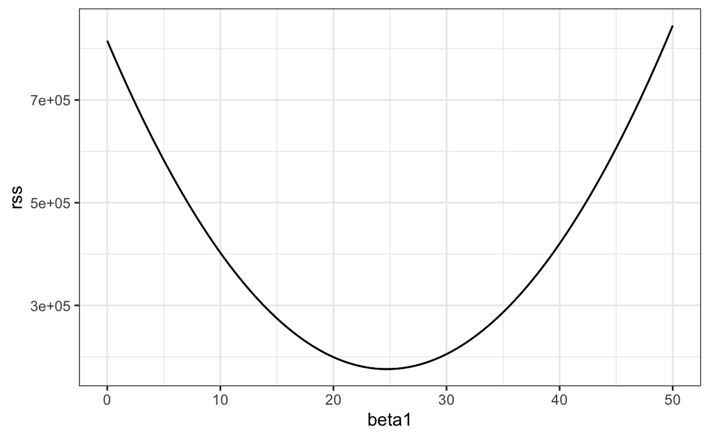
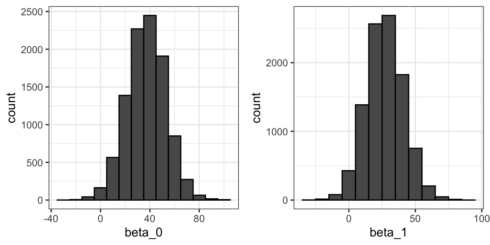
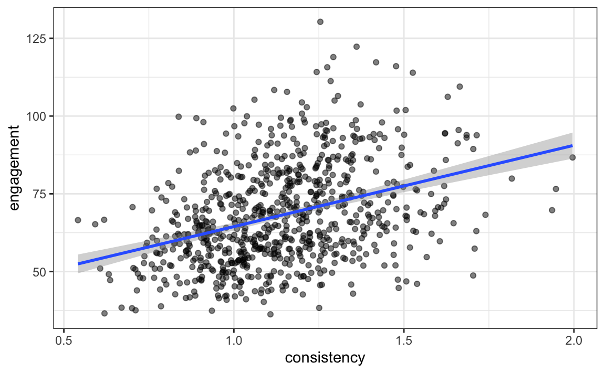
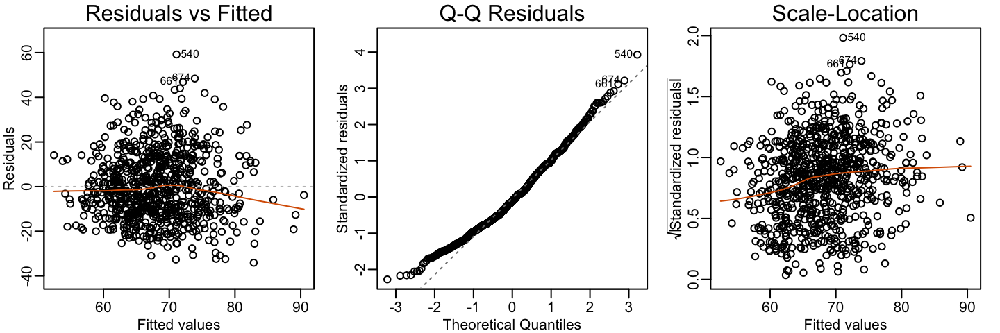
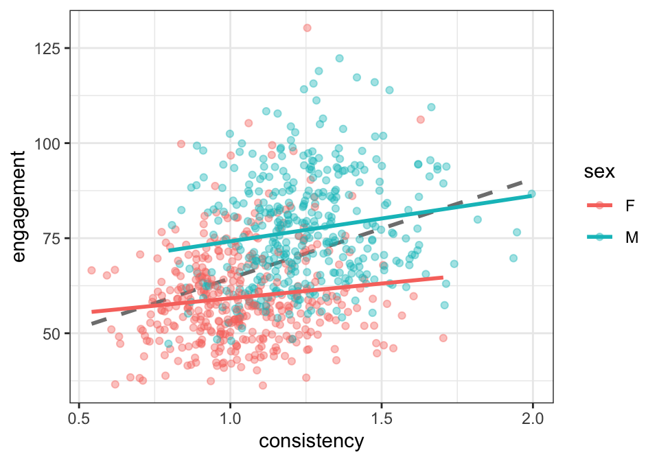
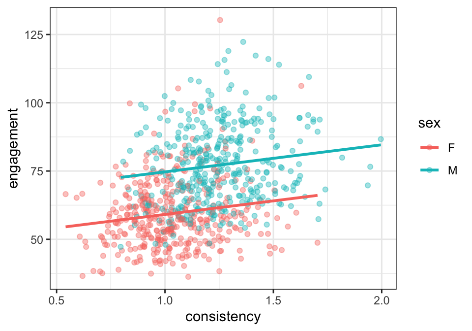
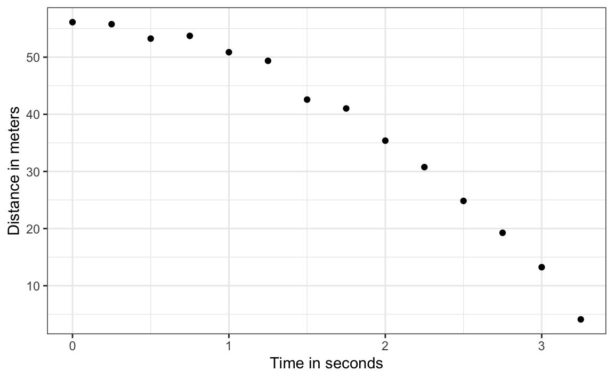
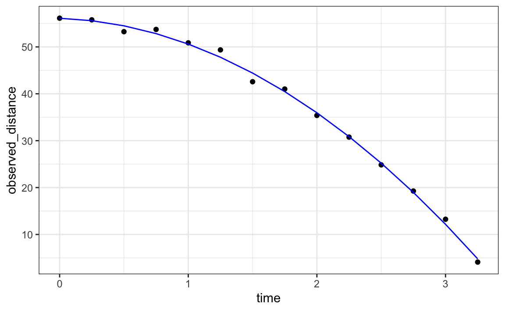
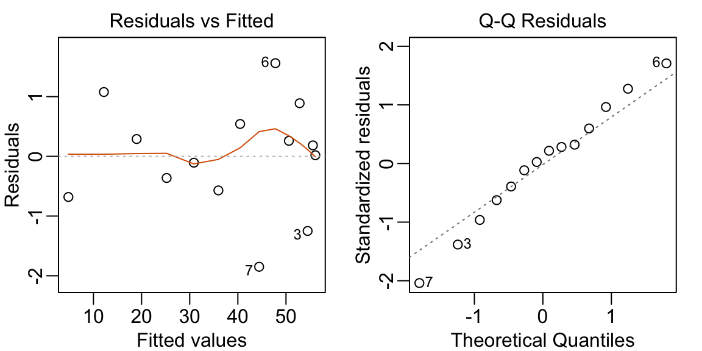

library(tidyverse)
library(behdslabs)
engagement <- app_engagement_experiment |>
filter(!is.na(consistency_index)) |>
select(consistency = consistency_index, engagement = engagement_score, sex)26 The Linear Model Framework
Original chapter by Rafael A. Irizarry, from Introduction to Data Science. Adapted by Giorgio Arcara: Galton’s father and son heights (HistData::GaltonFamilies) are replaced by users’ consistency index and engagement score (behdslabs::app_engagement_experiment), in the text and in exercises 10–13; the code uses the tidyverse instead of data.table; new sections A binary predictor: dummy variables and Adjusting for a confounder (with exercises 14–16), written with an AI assistant (Claude); the section on measurement error models is marked as optional; the text is otherwise Irizarry’s, with small edits to fit the new examples.
We are now ready to understand the title of this part of the book, and specifically the connection between regression and linear models. In the previous chapter, we showed that if two variables follow a bivariate normal distribution, then the conditional expectation of one given the other lies on a straight line, the regression line. In that setting, the linear relationship was not an assumption, but a mathematical consequence of the probability model.
In practice, however, we often adopt the linear relationship as a modeling strategy, even when the underlying distributions are not exactly bivariate normal. To work with such models, we need a general mathematical approach for estimating the unknown coefficients. In this chapter, we introduce the least squares estimator (LSE), the standard method used to estimate these parameters. The LSE provides a unified way to fit linear models across a wide range of applications.
We end the chapter by presenting one example in which the linear model was historically motivated: measurement error models. This example is different from the engagement data we studied earlier, but the same linear model framework, the same least squares mathematics, and even the same R functions can be used to fit it. Later chapters will introduce additional examples in which linear models play a central role.
26.1 The linear model representation
We note that linear here does not refer to lines exclusively, but rather to the fact that the conditional expectation is a linear combination of variables. In mathematics, when we multiply each variable by a constant and then add them together, we say we formed a linear combination of the variables. For example, \(3x - 4y + 5z\) is a linear combination of \(x\), \(y\), and \(z\). We can also add a constant so \(2 + 3x - 4y + 5z\) is also a linear combination of \(x\), \(y\), and \(z\).
We previously described how if \(X\) and \(Y\) are bivariate normal and we look at only the pairs with \(X=x\), then \(Y \mid X=x\) follows a normal distribution with expected value \(\mu_Y + \rho \frac{x-\mu_X}{\sigma_X}\sigma_Y\), which is a linear function of \(x\). Note also that the standard deviation \(\sigma_Y \sqrt{1-\rho^2}\) does not depend on \(x\). This implies that we can write:
\[ Y = \beta_0 + \beta_1 x + \varepsilon \]
and assume \(\varepsilon\) follows a normal distribution with expected value 0 and fixed standard deviation. Then \(Y\) has the same properties as the regression setup gave us: \(Y\) follows a normal distribution, the expected value is a linear function of \(x\), and the standard deviation does not depend on \(x\).
In statistical textbooks, the \(\varepsilon\) terms are referred to as errors. Historically, this reflected the idea that deviations from the model were due to measurement inaccuracies. Today, the term is used more broadly: the \(\varepsilon\)s represent all variation in the outcome that is not explained by the predictors in the model. This variation may have nothing to do with mistakes. For example, if a user’s engagement is ten points higher than what we would predict from their consistency, those ten points are not an error; they are simply natural variation among people. Although the term error is not ideal in this sense, it remains standard terminology, and we will use it to denote the unexplained variability in the model.
If we were to specify a linear model for the consistency and engagement data introduced in the previous chapter, we would denote the \(N\) observed consistency indices with \(x_1, \dots, x_n\), then we model the \(N\) engagement scores we are trying to predict with:
\[ Y_i = \beta_0 + \beta_1 x_i + \varepsilon_i, \, i=1,\dots,N. \]
Here, \(x_i\) is the user’s consistency index, which is fixed (not random) due to the conditioning, and \(Y_i\) is the random engagement score that we want to predict. We can further assume that the \(\varepsilon_i\) are independent from each other and all have the same standard deviation.
In the linear model framework, the \(x_i\) are referred to as the explanatory variables, covariates, or predictors.
In the above model, we know the \(x_i\), but to have a useful model for prediction, we need \(\beta_0\) and \(\beta_1\). We estimate these from the data. Once we do this, we can predict a user’s engagement for any consistency \(x\). We show how to do this in the next section.
Although this model is exactly the same one we derived earlier by assuming bivariate normal data, a somewhat nuanced difference is that, in the first approach, we assumed the data were bivariate normal, and the linear model was derived, not assumed. In practice, linear models are just assumed without necessarily assuming normality: the distribution of the \(\varepsilon\)s is not necessarily specified. Nevertheless, if your data is bivariate normal, the above linear model holds. If your data is not bivariate normal, then you will need to have other ways of justifying the model.
One reason linear models are popular is that they are easily interpretable. In the case of our data, we can interpret the model like this: the predicted engagement grows by \(\beta_1\) points for each unit we increase the consistency index \(x\). Because not all users with a consistency of \(x\) are equally engaged, we need the term \(\varepsilon\), which explains the remaining variability. This remaining variability includes motivation, free time, the version of the app each user had, and many other differences between people.
Given how we wrote the model above, the intercept \(\beta_0\) is not very interpretable, as it is the predicted engagement of a user with a consistency index of 0, a value that no user has. To make the slope parameter more interpretable, we focus on a slightly different model:
\[ Y_i = \beta_0 + \beta_1 (x_i - \bar{x}) + \varepsilon_i, \, i=1,\dots,N \]
with \(\bar{x} = \sum_{i=1}^N x_i / N\) the average of \(x\). The slope \(\beta_1\) is unchanged, but \(\beta_0\) now represents the height when \(x_i = \bar{x}\), which is the engagement of a user of average consistency.
At the end of this chapter, and in Chapter 27, we will see how the linear model representation permits us to use the same mathematical frameworks in other contexts and to achieve more complicated goals than predicting one variable from another.
26.2 Least Squares Estimates
For linear models to be useful, we have to estimate the unknown \(\beta\)s. The standard approach is to find the values that minimize the distance of the fitted model to the data. Specifically, we find the \(\beta\)s that minimize the least squares (LS) equation shown below. For our data, the LS equation looks like this:
\[ RSS = \sum_{i=1}^n \left\{ y_i - \left(\beta_0 + \beta_1 x_i \right)\right\}^2 \]
The quantity we try to minimize is called the residual sum of squares (RSS).
Once we find the values that minimize the RSS, we will call the values the least squares estimates (LSE) and denote them by placing a hat over the parameters. In our example we use \(\hat{\beta}_0\) and \(\hat{\beta}_1\).
We will demonstrate how we find these values using the engagement dataset defined in the previous chapter:
Let’s start by writing a function that computes the RSS for any pair of values \(\beta_0\) and \(\beta_1\).
rss <- function(beta0, beta1, data){
resid <- engagement$engagement - (beta0 + beta1*engagement$consistency)
return(sum(resid^2))
}So for any pair of values, we get an RSS. Here is a plot of the RSS as a function of \(\beta_1\), when we keep the \(\beta_0\) fixed at 40.
beta1 <- seq(0, 50, length = nrow(engagement))
results <- data.frame(beta1 = beta1, rss = sapply(beta1, rss, beta0 = 40))
results |> ggplot(aes(beta1, rss)) + geom_line() +
geom_line(aes(beta1, rss))
We can see a clear minimum for \(\beta_1\) at around 25. However, this minimum for \(\beta_1\) is for when \(\beta_0 = 40\), a value we arbitrarily picked. We don’t know if (40, 25) is the pair that minimizes the equation across all possible pairs.
Trial and error is not going to work in this case. We could search for a minimum within a fine grid of \(\beta_0\) and \(\beta_1\) values, but this is unnecessarily time-consuming since we can use calculus. Specifically, we take the partial derivatives of the LS equation, set them to 0, and solve for \(\beta_0\) and \(\beta_1\). Of course, if we have many parameters, these equations can get rather complex. But there are functions in R that do these calculations for us. We will study these next. To learn the mathematics behind this, you can consult one of the books on linear models in the Recommended Reading section.
26.3 The lm function
In R, we can obtain the least squares estimates for a linear model using the lm function. To fit the model:
\[ Y_i = \beta_0 + \beta_1 x_i + \varepsilon_i \]
with \(Y_i\) being the engagement score and \(x_i\) being the consistency index, we can use this code:
fit <- lm(engagement ~ consistency, data = engagement)The most common way we use lm is by using the character ~ to let lm know which is the variable we are predicting (left of ~) and which we are using to predict (right of ~). The intercept is added automatically to the model that will be fit.
The object fit includes information about the fit. We can use the function summary to extract a summary of this information:
summary(fit)
#>
#> Call:
#> lm(formula = engagement ~ consistency, data = engagement)
#>
#> Residuals:
#> Min 1Q Median 3Q Max
#> -34.11 -11.20 -1.77 10.24 59.20
#>
#> Coefficients:
#> Estimate Std. Error t value Pr(>|t|)
#> (Intercept) 38.32 2.80 13.7 <2e-16 ***
#> consistency 26.14 2.41 10.8 <2e-16 ***
#> ---
#> Signif. codes: 0 '***' 0.001 '**' 0.01 '*' 0.05 '.' 0.1 ' ' 1
#>
#> Residual standard error: 15.1 on 774 degrees of freedom
#> Multiple R-squared: 0.132, Adjusted R-squared: 0.13
#> F-statistic: 117 on 1 and 774 DF, p-value: <2e-16To understand some of the terms included in this summary, we need to remember that the LSEs are random variables. Mathematical statistics gives us some ideas of the distribution about these random variables.
LSE are random variables
The LSE is derived from the data \(y_1,\dots,y_N\), which are a realization of random variables \(Y_1, \dots, Y_N\). This implies that our estimates are random variables. To see this, we can run a Monte Carlo simulation in which we assume the consistency and engagement data define a population, take a random sample of size \(N=25\), and compute the regression slope coefficient for each one:
N <- 25
lse <- replicate(10000, {
smpl <- slice_sample(engagement, n = N, replace = TRUE)
coef(lm(engagement ~ consistency, data = smpl))
})We can see the variability of the estimates by plotting their distributions:

These look normal because the central limit theorem applies here as well: for large enough \(N\), the least squares estimates will be approximately normal with expected value \(\beta_0\) and \(\beta_1\), respectively.
The standard errors are a bit complicated to compute, but mathematical theory does allow us to compute them, and they are included in the summary provided by the lm function. The function summary shows us the standard error estimates:
fit <- lm(engagement ~ consistency, data = slice_sample(engagement, n = N, replace = TRUE))
summary(fit)$coef
#> Estimate Std. Error t value Pr(>|t|)
#> (Intercept) 17.8 17.7 1.01 0.325
#> consistency 41.9 16.9 2.48 0.021You can see that the standard error estimates reported above are close to the standard errors from the simulation:
with(lse, c(se_0 = sd(beta_0), se_1 = sd(beta_1)))
#> se_0 se_1
#> 15.7 14.1The summary function also reports t-statistics (t value) and p-values (Pr(>|t|)). The t-statistic is not actually based on the central limit theorem, but rather on the assumption that the \(\varepsilon\)s follow a normal distribution. Under this assumption, mathematical theory tells us that the LSE divided by their standard error, \(\hat{\beta}_0 / \widehat{\mathrm{SE}}[\hat{\beta}_0]\) and \(\hat{\beta}_1 / \widehat{\mathrm{SE}}[\hat{\beta}_1]\), follow a t-distribution with \(N-p\) degrees of freedom, with \(p\) the number of parameters in our model. In our example \(p=2\), and the two p-values are obtained from testing the null hypothesis that \(\beta_0 = 0\) and \(\beta_1=0\), respectively.
Remember that, as we described in Section 18.2, for large enough \(N\), the CLT works and the t-distribution becomes almost the same as the normal distribution. Also, notice that we can construct confidence intervals using the confint function:
confint(fit, "consistency", level = 0.95)
#> 2.5 % 97.5 %
#> consistency 6.9 76.9Hypothesis testing with regression models is commonly used in psychology, epidemiology and economics to make statements such as “the effect of A on B was statistically significant after adjusting for X, Y, and Z”. However, several assumptions have to hold for these statements to be useful. We show what adjusting means, and when it helps, at the end of this chapter (Section 26.6).
Predicted values are random variables
Once we fit our model, we can obtain a prediction of \(Y\) by plugging the estimates into the regression model. For example, if a user’s consistency index is \(x\), then our prediction \(\hat{y}\) for their engagement will be:
\[\hat{y} = \hat{\beta}_0 + \hat{\beta}_1 x\]
When we plot \(\hat{y}\) versus \(x\), we see the regression line.
Keep in mind that the prediction \(\hat{y}\) is also a random variable, and mathematical theory tells us what the standard errors are. If we assume the errors are normal or have a large enough sample size, we can use theory to construct confidence intervals as well.
The R function predict takes an lm object as input and returns the prediction. If requested, the standard errors and other information from which we can construct confidence intervals are provided:
fit <- lm(engagement ~ consistency, data = engagement)
y_hat <- predict(fit, se.fit = TRUE)
names(y_hat)
#> [1] "fit" "se.fit" "df" "residual.scale"In fact, the ggplot2 layer geom_smooth(method = "lm") surrounds the regression line using these confidence intervals:
engagement |> ggplot(aes(consistency, engagement)) + geom_point(alpha = 0.5) +
geom_smooth(method = "lm")
26.4 Model diagnostics
When we assume a linear model, rather than derive it from theory, all interpretations depend on how well the model represents the data. The lm function will fit the model and produce coefficient estimates, standard errors, and p-values even if the model is misspecified. Interpreting such results without verifying assumptions can lead to misleading conclusions.
For this reason, checking model assumptions is a critical requirement in statistical modeling. Diagnostic plots provide visual tools to assess whether the model captures the main structure in the data, whether residuals behave as expected, and whether potential outliers or influential points are distorting the fit. These checks are especially important when there is no strong theoretical justification for the assumed model, such as when the data-generating process is unknown or complex. In these cases, diagnostics are our main defense against drawing incorrect or overconfident conclusions.
Visually inspecting residuals, defined as the difference between observed values and predicted values:
\[ r_i = y_i - \hat{y}_i = y_i - \left(\hat{\beta}_0 + \hat{\beta}_1 x_i\right), \mbox{ for } i=1,\dots,N, \] and summaries of the residuals, is a powerful way to diagnose if the model is useful. Note that the residuals can be thought of as estimates of the errors since:
\[ \varepsilon = Y - \left(\beta_0 + \beta_1 x_i \right). \] In fact, residuals are often denoted as \(\hat{\varepsilon}\). This motivates several diagnostic plots. Because we observe \(r\), but don’t observe \(\varepsilon\), we base the plots on the residuals \(r\).
Because the errors are assumed not to depend on the expected value of \(Y\), a plot of \(r\) versus the fitted values \(\hat{y}\) should show no relationship.
In cases in which we assume the errors follow a normal distribution, a qqplot of standardized \(r\) should fall on a line when plotted against theoretical quantiles (QQ plots are explained in Section 9.2).
Because we assume the standard deviation of the errors is constant, if we plot the absolute value of the residuals, it should appear constant.
We prefer plots rather than summaries based on, for example, correlation because, as noted in Section 25.2.2, correlation is not always the best summary of association. The function plot applied to an lm object automatically plots these.
plot(fit, which = 1:3)
This function can produce six different plots, and the argument which lets you specify which you want to see. You can learn more by reading the plot.lm help file. However, some of the plots are based on more advanced concepts beyond the scope of this book. To learn more, we recommend an advanced book on regression analysis included in the Recommended Reading section.
At the end of this chapter, and in Chapter 27, we introduce data analysis challenges in which we may decide not to include certain variables in the model. In these cases, an important diagnostic test is to check if the residuals are related to variables not included in the model.
26.5 A binary predictor: dummy variables
Draft
This section and the next were written for this book with an AI assistant (Claude) on 22 November 2026, and are not yet reviewed by the instructor.
So far, the predictor \(x\) has been a number. Many predictors in behavioural research are categories instead: sex, the version of an interface, the device used, the condition of an experiment. The linear model handles them with a simple trick. Suppose we want to predict engagement from sex. We define a new variable
\[ x_i = \begin{cases} 1 & \text{if user } i \text{ is a man}\\ 0 & \text{if user } i \text{ is a woman}\end{cases} \]
and fit the same model as before:
\[ Y_i = \beta_0 + \beta_1 x_i + \varepsilon_i \]
A variable like \(x_i\), which is 1 for one category and 0 for the other, is called a dummy variable (or indicator variable). With it, the model gives one prediction for each group. For women, \(x_i = 0\), and the expected engagement is \(\beta_0\). For men, \(x_i = 1\), and it is \(\beta_0 + \beta_1\). So \(\beta_0\) is the average of the women and \(\beta_1\) is the difference between the average of the men and that of the women.
We do not need to create the dummy variable ourselves. When the predictor is a factor (or a character vector), lm creates it for us:
fit_sex <- lm(engagement ~ sex, data = engagement)
coef(fit_sex)
#> (Intercept) sexM
#> 59.5 17.7The coefficients are exactly the group averages and their difference:
engagement |> group_by(sex) |> summarize(average = mean(engagement))
#> # A tibble: 2 × 2
#> sex average
#> <fct> <dbl>
#> 1 F 59.5
#> 2 M 77.1The function model.matrix shows the variables that lm actually used. The column sexM is the dummy variable: 1 for men, 0 for women. The column of 1s is the intercept.
head(model.matrix(fit_sex))
#> (Intercept) sexM
#> 1 1 0
#> 2 1 0
#> 3 1 0
#> 4 1 0
#> 5 1 0
#> 6 1 0
head(engagement$sex)
#> [1] F F F F F F
#> Levels: F MWhich group gets the 0 is decided by the order of the factor levels: the first level is the reference level, and the coefficient is called after the other one (sexM). Here F comes first because levels are sorted alphabetically. To use men as the reference, we change the order of the levels with relevel. The fitted values do not change; the intercept becomes the average of the men, and the sign of the difference flips:
engagement |>
mutate(sex = relevel(sex, ref = "M")) |>
lm(engagement ~ sex, data = _) |>
coef()
#> (Intercept) sexF
#> 77.1 -17.7Choosing the reference level is a matter of interpretation: in an experiment, the control condition is the natural reference, so that the coefficient is the effect of the treatment compared with the control.
A linear model with a dummy variable is a t-test
The comparison of two group means is the job of the t-test (Chapter 18). The linear model with a dummy variable does the same job:
summary(fit_sex)$coef
#> Estimate Std. Error t value Pr(>|t|)
#> (Intercept) 59.5 0.680 87.5 0.00e+00
#> sexM 17.7 0.973 18.2 1.27e-61
t.test(engagement ~ sex, data = engagement, var.equal = TRUE)
#>
#> Two Sample t-test
#>
#> data: engagement by sex
#> t = -18, df = 774, p-value <2e-16
#> alternative hypothesis: true difference in means between group F and group M is not equal to 0
#> 95 percent confidence interval:
#> -19.6 -15.8
#> sample estimates:
#> mean in group F mean in group M
#> 59.5 77.1The t statistic of the sexM row and the t statistic of Student’s t-test are the same number, with opposite signs only because t.test subtracts the men’s average from the women’s, and the p-values are identical. The confidence interval of the difference is the same too (confint(fit_sex)). The linear model assumes, like Student’s t-test, that the two groups have the same standard deviation; Welch’s version of the t-test, the default of t.test, does not, and gives slightly different results.
This equivalence is the first example of a general fact: many of the tests of Basic Statistics are special cases of the linear model. A categorical predictor with more than two levels needs more than one dummy variable, one fewer than the number of levels, and gives the ANOVA of Chapter 19. We return to this in Chapter 27.
26.6 Adjusting for a confounder
In the previous chapter, the regression line of engagement on consistency had a slope of 26.1: users who are 0.1 more consistent are, on average, about 2.6 points more engaged. But the users are women and men, and the two groups differ on both variables:
engagement |>
group_by(sex) |>
summarize(consistency = mean(consistency), engagement = mean(engagement), n = n())
#> # A tibble: 2 × 4
#> sex consistency engagement n
#> <fct> <dbl> <dbl> <int>
#> 1 F 1.04 59.5 397
#> 2 M 1.25 77.1 379Men are, on average, both more consistent and more engaged. Part of the association between consistency and engagement could therefore come from sex: sex is a potential confounder (see Confounding in Chapter 6). The first way to check is to stratify, that is, to look at the association within each sex:
engagement |>
ggplot(aes(consistency, engagement)) +
geom_smooth(method = "lm", se = FALSE, colour = "grey50", linetype = 2) +
geom_point(aes(colour = sex), alpha = 0.4) +
geom_smooth(aes(colour = sex), method = "lm", se = FALSE)
The dashed line is the regression line computed on all users. Within each sex, the lines are much flatter. The correlations tell the same story:
engagement |>
group_by(sex) |>
summarize(r = cor(consistency, engagement))
#> # A tibble: 2 × 2
#> sex r
#> <fct> <dbl>
#> 1 F 0.120
#> 2 M 0.168Stratifying works well with one confounder with two levels. With a numerical confounder, or with several confounders, the strata become too many and too small. The linear model offers another way: we add the confounder to the model as a second predictor. With \(x_i\) the consistency of user \(i\) and \(z_i\) a dummy variable for sex (1 for men, 0 for women), the model is
\[ Y_i = \beta_0 + \beta_1 x_i + \beta_2 z_i + \varepsilon_i \]
In R, we add the predictor with +:
fit_adj <- lm(engagement ~ consistency + sex, data = engagement)
summary(fit_adj)$coef
#> Estimate Std. Error t value Pr(>|t|)
#> (Intercept) 49.20 2.61 18.87 1.30e-65
#> consistency 9.91 2.43 4.08 4.94e-05
#> sexM 15.59 1.09 14.31 2.30e-41The slope for consistency drops from 26.1 to 9.9. To see what the new coefficients mean, plug in the two values of \(z_i\). For women, \(z_i = 0\), and the model is the line \(\beta_0 + \beta_1 x\). For men, \(z_i = 1\), and it is the line \((\beta_0 + \beta_2) + \beta_1 x\). These are two parallel lines, with the same slope \(\beta_1\) and intercepts that differ by \(\beta_2\):
engagement |>
mutate(fitted = predict(fit_adj)) |>
ggplot(aes(consistency, engagement, colour = sex)) +
geom_point(alpha = 0.4) +
geom_line(aes(y = fitted), linewidth = 1)
So \(\beta_1\) is the expected difference in engagement between two users who differ by one unit in consistency and have the same sex. This is what holding sex constant, controlling for sex or adjusting for sex means. The coefficient \(\beta_2\) is, in the same way, the difference between men and women of the same consistency. The model also fits better: \(R^2\), the proportion of variance explained (see Variance explained in Chapter 25), goes from 0.13 to 0.31.
The confidence interval for the adjusted slope is still far from zero:
confint(fit_adj, "consistency")
#> 2.5 % 97.5 %
#> consistency 5.14 14.7Consistency is still associated with engagement among users of the same sex, but about 62% of the slope we saw at first was due to the difference between women and men.
What adjusting can and cannot do
Adjusting with a linear model is a powerful tool, but it is easy to ask too much of it. Four limits matter in practice:
- Only measured confounders are adjusted for. The adjusted slope still contains the effect of every confounder we did not include, such as free time or motivation. Randomisation, not adjustment, is what balances unmeasured variables (Chapter 4).
- Only well-measured confounders are fully adjusted for. If a confounder is measured with error, adjusting for it removes only part of its influence, and the rest stays in the coefficient of interest (see Measurement error and its consequences in Chapter 1). Sex is recorded with little error; a questionnaire score of stress is not.
- Not every variable should be adjusted for. Adjusting for a confounder removes a spurious association, but adjusting for a mediator removes part of the effect we want to estimate, and adjusting for a collider creates an association that was not there (see Adjusting is not free in Chapter 6). Which variables to include is a causal decision, not a statistical one.
- An adjusted association is still an association. The model says how engagement and consistency go together among users of the same sex. It does not say that making users more consistent would make them more engaged: these data are observational with respect to consistency. Interpreting the adjusted coefficient causally requires the arguments of Chapter 6, and the interpretation questions of Chapter 28.
Finally, the model assumed that the two lines are parallel: that the association between consistency and engagement is the same for women and men. When this is not true, the lines must be allowed to have different slopes, with an interaction term. We introduce interactions in Chapter 27, where we also use the linear model to analyse an experiment.
26.7 Measurement error models
This section is optional: it is not part of the course. It shows a different use of the same linear model framework.
Historically, writing linear models in the form \(Y = \beta_0 + \beta_1 x + \varepsilon\) originated in contexts where the \(\varepsilon\) term represented measurement error. Early scientists used least squares to estimate physical constants from repeated measurements affected by instrument noise. Later, Galton and Pearson extended this framework to study relationships between variables, such as the heights of parents and children, and it is the same framework we used for consistency and engagement.
In this section, we briefly present a setting where the measurement-error interpretation is appropriate and show that we can fit the corresponding model using the same mathematics and the same R function. This illustrates one of the key advantages of the linear model framework: a single set of tools applies across many seemingly different situations.
Example: modeling a falling object
To understand these models, imagine you are Galileo in the 16th century, trying to describe the velocity of a falling object. An assistant climbs the Tower of Pisa and drops a ball, while several other assistants record the position at different times. Let’s simulate some data using the physics equations that are now known, and add some measurement error. The behdslabs function rfalling_object generates these simulations:
library(tidyverse)
library(behdslabs)
falling_object <- rfalling_object()The assistants hand the data to Galileo, and this is what he sees:

Galileo does not know the exact equation, but by looking at the plot above, he deduces that the position should follow a parabola, which we can write like this:
\[ f(x) = \beta_0 + \beta_1 x + \beta_2 x^2 \]
The data does not fall exactly on a parabola. Galileo knows this is due to measurement error. His helpers make mistakes when measuring the distance. To account for this, he models the data with:
\[ Y_i = \beta_0 + \beta_1 x_i + \beta_2 x_i^2 + \varepsilon_i,\,\, i=1,\dots,n \]
with \(Y_i\) representing distance in meters, \(x_i\) representing time in seconds, and \(\varepsilon_i\) accounting for measurement error. The measurement error is assumed to be random, independent across observations, and having the same distribution for each \(i\). We also assume that there is no bias, which means the expected value of the error terms is 0: \(\mathrm{E}[\varepsilon] = 0\).
Note that this is a linear model because it is a linear combination of known quantities (\(x\) and \(x^2\) are known) and unknown parameters (the \(\beta\)s are unknown parameters to Galileo). Unlike our previous examples, here \(x\) is a fixed quantity; we are not conditioning.
Small discrepancies between a model’s predictions and observations are often attributed to measurement error, as in our example. In many cases, this is a useful and practical approximation. However, such differences can also reveal limitations in the model itself. Galileo’s experiments on gravity showed slight deviations from his predicted uniform acceleration, largely due to air resistance rather than flawed measurements. Similarly, Newton’s laws of gravity accurately described planetary motion, but small discrepancies in Mercury’s orbit, once considered observational errors, ultimately led to Einstein’s general theory of relativity. While assuming measurement error is often reasonable, it is crucial to recognize when discrepancies signal model limitations. The diagnostic plots discussed in Section 26.4 can help assess such limitations.
Estimating parameters with least squares
To pose a new physical theory and start making predictions about other falling objects, Galileo needs actual numbers, rather than unknown parameters. Using LSE seems like a reasonable approach. How do we find the LSE?
LSE calculations do not require the errors to be approximately normal. The lm function will find the \(\beta\)s that will minimize the residual sum of squares:
fit <- falling_object |>
mutate(time_sq = time^2) |>
lm(observed_distance~time+time_sq, data = _)
summary(fit)$coefficients
#> Estimate Std. Error t value Pr(>|t|)
#> (Intercept) 56.106 0.692 81.024 1.26e-16
#> time -0.931 0.989 -0.941 3.67e-01
#> time_sq -4.571 0.294 -15.575 7.67e-09Let’s check if the estimated parabola fits the data. The broom function augment allows us to do this easily:
broom::augment(fit) |>
ggplot() +
geom_point(aes(time, observed_distance)) +
geom_line(aes(time, .fitted), col = "blue")
The residuals confirm that the normal approximation for the errors is reasonable:
plot(fit, which=1:2)
Thanks to my high school physics teacher, I know that the equation for the trajectory of a falling object is:
\[ d(t) = h_0 + v_0 t - 0.5 \times 9.8 \, t^2 \]
with \(t\) as time in seconds and \(h_0\) and \(v_0\) the starting height and velocity, respectively. The data we simulated above followed this equation, adding measurement error to simulate n observations for dropping the ball \((v_0=0)\) from the tower of Pisa \((h_0=55.86)\).
These are consistent with the parameter estimates:
confint(fit)
#> 2.5 % 97.5 %
#> (Intercept) 54.58 57.63
#> time -3.11 1.25
#> time_sq -5.22 -3.93The Tower of Pisa height is within the confidence interval for \(\beta_0\), the initial velocity 0 is in the confidence interval for \(\beta_1\) (note the p-value is larger than 0.05), and the acceleration constant is in a confidence interval for \(-2 \times \beta_2\).
26.8 Exercises
1. The co2 dataset is a time series object of 468 CO2 observations, monthly from 1959 to 1997. Plot CO2 levels for the first 12 months and notice it seems to follow a sine wave with a frequency of 1 cycle per year. This means that a measurement error model that might work is
\[ y_i = \mu + A \sin(2\pi \,t_i / 12 + \phi) + \varepsilon_i \] with \(t_i\) the month number for observation \(i\). Is this a linear model for the parameters \(\mu\), \(A\), and \(\phi\)?
2. Using trigonometry, we can show that we can rewrite this model as:
\[ y_i = \beta_0 + \beta_1 \sin(2\pi t_i/12) + \beta_2 \cos(2\pi t_i/12) + \varepsilon_i \]
Is this a linear model?
3. Find least square estimates for the \(\beta\)s using lm. Show a plot of \(y_i\) versus \(t_i\) with a curve on the same plot showing \(\hat{y}_i\) versus \(t_i\).
4. Now fit a measurement error model to the entire co2 dataset that includes a trend term that is a parabola, as well as the sine wave model.
5. Run diagnostic plots for the fitted model and describe the results.
6. Fit a regression model to each of the datasets in the Anscombe quartet introduced in the previous chapter (anscombe dataset) and examine the diagnostic plots.
10. In the previous chapter (exercise 7), we computed the correlation between consistency and engagement separately for women and for men. We can compute these correlations using:
cors <- app_engagement_experiment |>
filter(!is.na(consistency_index)) |>
group_by(sex) |>
summarize(cor = cor(consistency_index, engagement_score))We noticed a difference. Is this difference statistically significant? To answer this, we will compute the slopes of the regression lines along with their standard errors. Start by using lm to compute the LSE of the slopes and the standard errors, separately for women and for men.
11. Repeat exercise 10, but compute a confidence interval as well.
12. Plot the confidence intervals and notice that they overlap, which implies that the data are consistent with the same slope in women and in men. Compare the two slopes with the slope computed on all users. What do you notice? Explain the difference using Section 26.6.
13. Repeat exercises 10 to 12 with the error rate (error_rate_pct) as the outcome instead of the engagement score.
14. Using app_engagement_experiment, fit a model for the engagement score with the consistency index, sex and interface version (ui_version) as predictors. How does the coefficient of consistency compare with the one in Section 26.6? Interface version was assigned at random: should it be associated with consistency? Check with a plot or a table.
15. Fit the model of Section 26.5 with ui_version instead of sex. Which level is the reference? Interpret the intercept and the coefficient, and compare the result with t.test(..., var.equal = TRUE).
16. Simulate a confounder measured with error. Generate z <- rnorm(1000), x <- z + rnorm(1000) and y <- z + rnorm(1000), so that x has no effect on y. Fit lm(y ~ x) and lm(y ~ x + z). Then replace z in the second model with a noisy measure, z_obs <- z + rnorm(1000, sd = 1). What happens to the coefficient of x? Explain why, using Section 26.6.